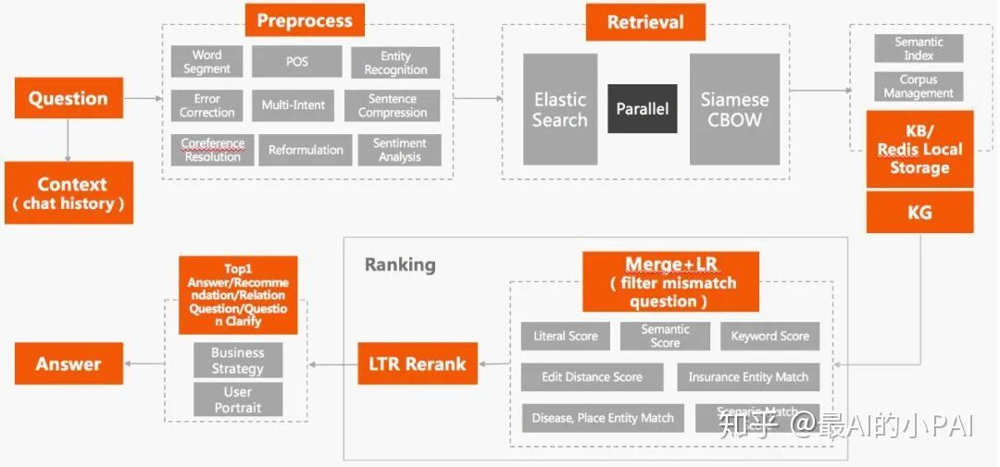
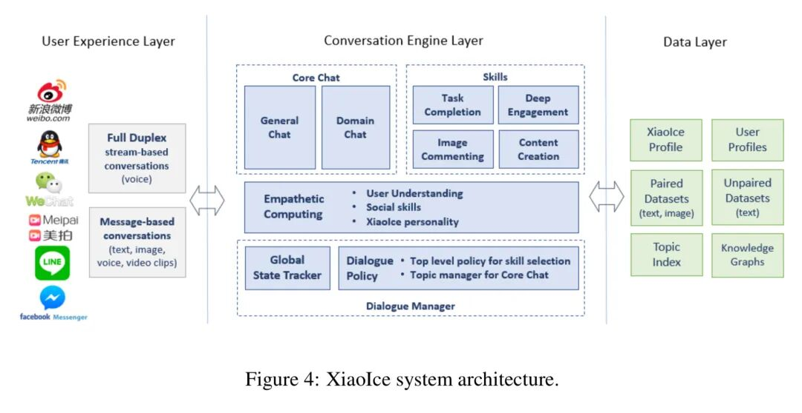
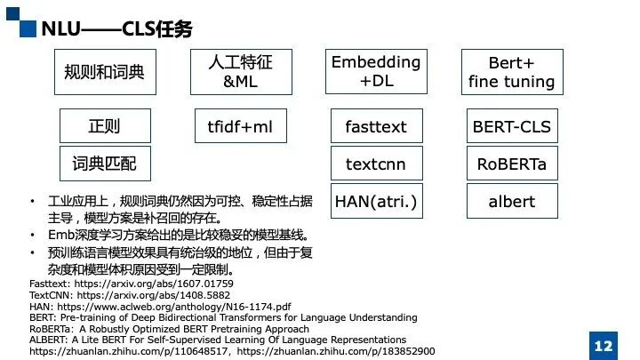
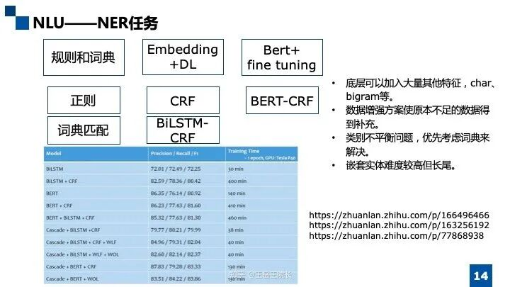
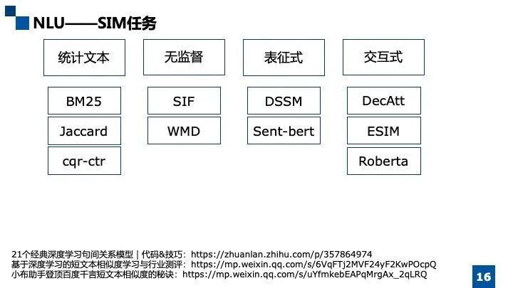
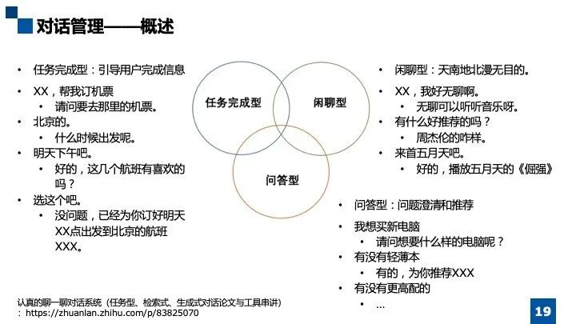

NLU 落地场景：智能对话交互

NLP落地场景的探讨
相比推荐系统这个工业场景味道比较浓的名词，NLP可能显得更加学术，主要是因为NLP本身更像是一个工具的角色，他解决的就是人类语言相关的问题，推荐系统则是一个完整地系统，根据实际需求往里面塞东西。
那么换个视角，现在我们常说，为互联网创造更多钞票的，应该是搜广推三大领域，即搜索、广告、推荐。NLP在搜索中起到的作用还是比较关键的，毕竟没有语言的话用户的query理解不了，一些物料和知识也是有需要信息提取的，而推荐和广告更多时候输入不是query而是用户画像信息，所以只有物料知识的内容理解需要用到NLP。
那么，NLP最强的落地场景是什么，这个要回归L，即语言实际的功能——沟通交流，因此要落地NLP，最直接的场景就需要是沟通交流，很明显，我想说的就是对话，对话领域其实已经落地了大量场景，我们常见的小布、小爱、siri等，另外电商客服、各个领域的知识咨询和问答，包括现在逐步流行的全屋智能，需要人提交命令才能够得到回应，接受终端往往需要强NLP能力来理解用户的需求。
对话系统基本架构
对话系统的架构其实已经有了一个比较完整的共识了，这里给两个例子，这两个例子其实均来自于我之前的文章。

首先第一篇来自平安的论文，这篇论文详细阐述了一个用户来了之后的全流程，覆盖预处理（query理解，NLU）、检索、知识库、排序、对话策略全流程，有关内容可以查看我之前的文章：。
第二篇要谈的是微软小冰的架构，这个架构则比较细致，也比较工程化的同时又比较简单。首先是对话各个形式来源的用户输入，然后是内部的各个涉及对话的引擎，然后还列举了底层涉及的对话需要的数据集。

在这两个架构案例里，我们能够知道的是，整个对话系统的必要组分是这几个：
query理解模块，涉及前后处理，中间关键的是向量表征、分类、提槽、关键词等工作。 检索模块，根据query理解的结果去查询知识库。 排序模块，对多个结果进行排序，找出最优策略。 对话管理，在多轮环境下，或者是一些个性化的场景下，分析上下文再来对当前结果进行调整。
NLU
NLU应该是对话系统里非常关键的部分，只有把句子理解好了，后面的操作才进行的下去。
那么，NLU本身主要是3大任务：
CLS：文本分类。 NER：命名实体识别。 SIM：语义相似度。
之前其实我已经用了3篇文章来统一讲解我的经验和思考，此处小小的展开聊一下吧。
CLS

文本分类任务，说白了就是给定句子和类目，通过特定的方式找到划分他们到正确类目的方法。
规则和词典：经典、高效、稳定的文本分类方法，除非研究文本分类问题本身外，所有使用文本分类其实都建议先思考这个方法。 人工特征&ML：深度学习出来前，通过词袋模型等手段构造特征，然后用机器学习方法进行分类。 Embedding+DL：深度学习，应该是最通用、最容易落地实施的方案了，基线的话，fasttext、textcnn都可以尝试，HAN适合长一些的文本。 Bert+finetuning：bert已经从一个模型本身升级为一类方法了，即大规模预训练语言模型，这里面给出一些基本方案可以作为baseline尝试。
这里再放一下我原来针对文本分类的思考的总结文章：心法利器[11] | 任务方案思考：文本分类篇
另外还有我PPT提到的材料：
Fasttext: https://arxiv.org/abs/1607.01759 TextCNN: https://arxiv.org/abs/1408.5882 HAN: https://www.aclweb.org/anthology/N16-1174.pdf BERT: Pre-training of Deep Bidirectional Transformers for Language Understanding RoBERTa：A Robustly Optimized BERT Pretraining Approach ALBERT: A Lite BERT For Self-Supervised Learning Of Language Representations 【资源整合】BERT论文合集：https://zhuanlan.zhihu.com/p/110648517 如何解决NLP分类任务的11个关键问题：类别不平衡&低耗时计算&小样本&鲁棒性&测试检验&长文本分类：https://zhuanlan.zhihu.com/p/183852900
NER

命名实体识别任务，是一种比文本分类稍难一些的任务，文本分类针对整个句子进行分类，命名实体识别的本质是对整个句子内的每个位点都进行分类，即序列标注任务。这是我划分的几个种类：
规则和词典：同上，在词典的支援下，命名实体识别的效果其实会比较稳定，而且相比标注数据，挖掘词典可能更加简单。 Embedding+DL：CRF和BiLSTM-CRF应该是最稳定，最提倡首先使用的方法了。 Bert+finetuning：bert的好处就在于，把任务插件化，下游带一些有监督数据就能做一个基线。
这里再放一下我原来针对命名实体识别的思考的总结文章：心法利器[12] | 任务方案思考：序列标注（NER）篇
另外还有我PPT提到的材料：
流水的NLP铁打的NER：命名实体识别实践与探索：https://zhuanlan.zhihu.com/p/166496466 美团搜索中NER技术的探索与实践：https://zhuanlan.zhihu.com/p/163256192 nlp中的实体关系抽取方法总结：https://zhuanlan.zhihu.com/p/77868938
SIM

SIM是语义相似度，这块的方法分类我就没有按照上面来区分了，主要是因为语义相似度本身有两个核心功能，分别是向量检索和最后的对话排序，因此我的分类变成这样子：
统计文本。在深度学习出来之前，BM25、cqr/ctr、jaccard占据了搜索排序的半壁江山。 无监督。小到word2vector，达到bert，预训练语言模型的输出本身就可以通过池化等手段获取句向量，这个句向量可以直接通过取余弦等方式得到语义相似度。 表征式。即经典的双塔式，只在出结果之前的一层中做余弦等简单方式进行比对交互，前面的有完整的表征链路，该链路下两个句子不做交互。 交互式。与表征式相反，中间可以反复进行比较，从而得到更加精准的相似度计算。
这里再放一下我原来针对语义相似度的思考的总结文章：心法利器[13] | 任务方案思考：句子相似度和匹配
21个经典深度学习句间关系模型｜代码&技巧：https://zhuanlan.zhihu.com/p/357864974 基于深度学习的短文本相似度学习与行业测评：https://mp.weixin.qq.com/s/6VqFTj2MVF24yF2KwPOcpQ 小布助手登顶百度千言短文本相似度的秘诀：https://mp.weixin.qq.com/s/uYfmkebEAPqMrgAx_2qLRQ
对话管理

考虑到自己现在接触的DM还比较少，自己就没打算展开讲，只是介绍了一些基本的概念，等自己后续研究深一些再说。那么现在来给大家简单介绍一下吧，这个从对话领域的3大场景来介绍会更简单一些。
首先，对话管理需要做的事情就是记录整个对话过程的信息，例如对话过程达成的共识，或者是在对话过程中根据一些设计思路，来保证整个对话过程能够达成某些目标。好的现在来看这3大场景。
首先是任务完成型。说得简单点，就是要指导用户完成一个特定的功能，例如订机票，要求用户提供起点、终点、出发时间等信息后才能订机票，因此需要提前构造一个模板引导用户完成。
其次是闲聊型。闲聊是天南地北什么都会聊的，所以要在聊天过程中记录一些用户的偏好（当然可以是其他渠道或者是很久以前挖掘好的），在对话过程中考虑到，例如特定文化的避讳、对方的知识水平等。
再者是问答型。问答型一般一轮就能搞定，但是有些时候可能会出现问题不明确的情况，例如你在淘宝上买浴缸，需要客服给你推荐产品的时候他会问你喜欢什么样的产品。
对于对话系统整体性的东西，可以看看这篇文章：
认真的聊一聊对话系统（任务型、检索式、生成式对话论文与工具串讲）：https://zhuanlan.zhihu.com/p/83825070
小结
现在很多人喜欢拿推荐系统和nlp来对比，但其实推荐系统是一个非常明确的应用场景，而NLP更像是一个研究方向或者是技术点，所以很多人会想不明白NLP是怎么落地的，虽然所谓的搜广推三大企业财富密码都会一定程度用到NLP，但最重NLP的，一定是智能对话场景，别以为只有几大对话机器人项目，如小布、siri、小爱之类的产品需要，随着各种人机场景逐步落地，如智能家居、智能办公等，其实有非常广阔的落地机会，因此本人还是非常看好对话领域的。
当然，对话领域本身也有大量问题没有解决，随便举几个：
多轮。虽然各种多轮对话已经有很多研究，但是目前来看还是有很大空间，尤其是一个开放域、通用型的多轮对话技术，这里的核心就是对知识的管理和使用，知识图谱是其中一种存储方式，但是对于个性化的信息，知识图谱是否适合也是个问题。 人设。为了让机器人更像人，人设是一个非常有意思且重要的问题，人是有大量个性化的特征的，年龄、性格、性别等，还有各种阅历导致的知识和信仰，这对人来说很简单，但是对机器人的塑造就很难，这是其一；其二，就是机器人如何根据对方人设给出合适的回答，即回答的个性化，例如小学生和对成年人的话术、话题就应该不同。 情绪和情感管理。为了让机器人更像人，机器人是可以有情绪的，当然，为了服务好人类，机器人可以根据对方情绪给出不同的话术，
当然，还有很多问题有待研究，我只想聊的是，机会还很多，都可以尝试，给大家共享我的视角，希望能对大家打开思路有些帮助吧。